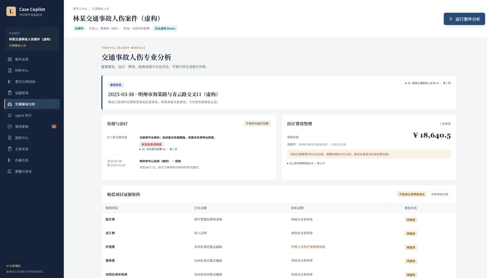
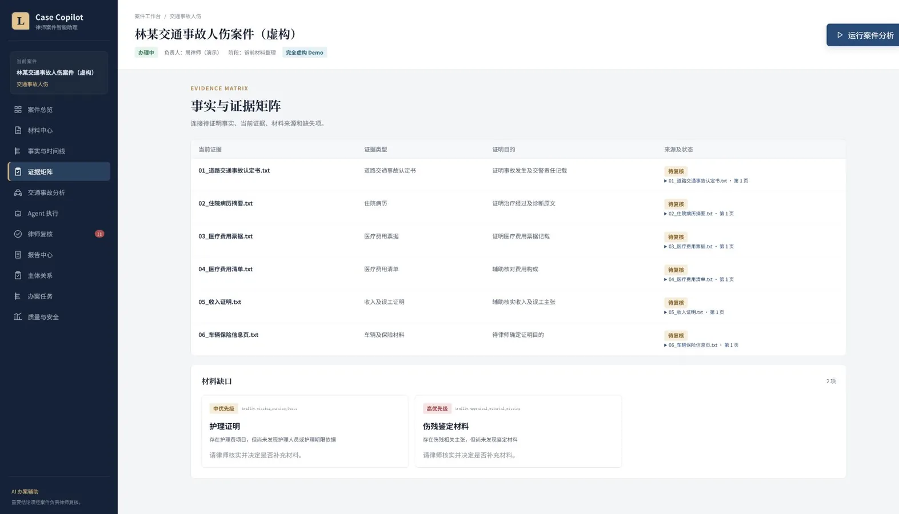
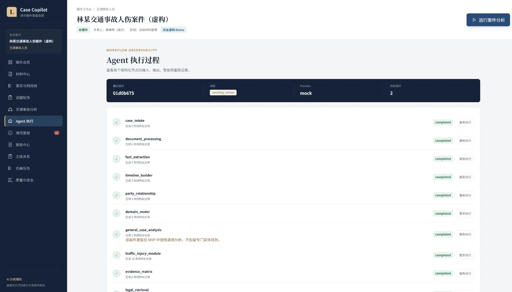
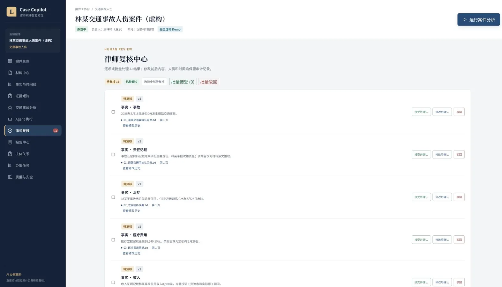

AI PRODUCT · AGENT WORKFLOW · LEGAL TECH
把案件材料，组织成
可追溯的律师工作流
不是普通法律问答机器人，而是围绕具体案件运行的工作空间。 从材料解析、事实与时间线，到证据核查、专业风险提示和律师复核。
安全边界 系统只提供办案辅助，不构成正式法律意见；关键结论必须由案件负责律师确认。

材料引用覆盖100%完全虚构回归集
专业赔偿项目13证据与参数矩阵
WORKFLOW ORCHESTRATION
一个编排器，多组结构化节点
通用能力与专业规则解耦。节点保留输入、输出、警告、版本和运行记录，不把所有能力包装成互相对话的独立 Agent。
材料处理
PDF、Word、图片与文本解析，分类、切片、质量检查和 Prompt Injection 风险提示。
事实建模
抽取主体、时间、行为、金额和冲突；每条事实绑定来源文件、页码与原文。
领域路由
通用案件进入基础工作流，交通事故人伤案件加载独立专业节点与 YAML 规则。
人工复核
律师接受、修改或驳回 AI 结果；系统保留版本、错误类型和完整审计记录。
EVIDENCE, NOT CLAIMS
产品能力用界面、引用和评测证明
公开展示只使用完全虚构数据。100% 指合成回归集中的材料来源覆盖，不代表真实案件准确率或法律正确率。



TECHNICAL DESIGN
为企业 AI 应用设计的克制架构
React + TypeScript 前端，FastAPI + SQLAlchemy 后端，SQLite 可迁移 PostgreSQL；Provider Adapter、Retriever 接口和 Domain Plugin 均可替换。
React / TypeScriptFastAPI / Pydantic
SQLAlchemy / PostgreSQLRAG / Verified Sources
YAML Rule EngineHuman Review
Audit / ReplayModel-agnostic Adapter
60-SECOND PRODUCT TOUR
一分钟看完完整办案链路
画面与案例数据均为虚构，中文配音演示从案件空间、专业分析到律师复核和辅助报告。
PORTFOLIO PROJECT
面向 AI 产品经理、Agent 产品与企业 AI 应用岗位
项目重点不是堆砌 Agent，而是把业务边界、领域规则、可追溯性、人工复核和评测体系落实到一个可运行产品中。
阅读 Case Study